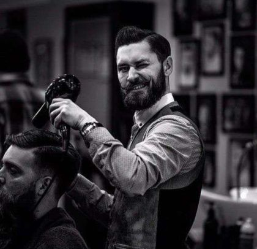

Наша миссия - делать красивыми всех вокруг! Любой может выглядеть достойно, независимо от возраста и типа волос.
КОМАНДА
АНДРЕЙ
Мастер своего дела, внимателен к мелочам
TOP BARBER

СЕРГЕЙ
Профессионал с большой буквы, топ барбер
УСЛУГИ И ЦЕНЫ
Главные секреты барбершопов — профессионализм, инструменты и опыт работы. А также брутальная обстановка, в которой хочется побывать снова и снова. Барберу всегда можно довериться: Вы удивитесь, как стрижка может изменить внешность в лучшую сторону. Большинство парикмахерш из салонов красоты ограничиваются понятиями «бокс» и «ёжик» для мужчин. Да, это дешевле. Но хочется ли Вам быть «как все»? В барбершопе такого никогда не случится. Каждая стрижка у мужского мастера — индивидуальное творение.
Хотя и есть люди, которые возражают этому: в барбершопе тоже делают одинаковые стрижки. Да, такое бывает. Но лишь потому, что стандартные стрижки популярны среди клиентов. И в этом плане барбершопы выигрывают: если Вы все-таки решитесь на перемены в своем образе, предоставляя волю мастеру в подборе индивидуального стиля, Вы удивитесь огромному сочетанию техник, примененных барбером, инструментов и результату, который точно подойдет Вам.
Укладка – это способ придать форму и объем волосам с помощью фена и горячих электроинструментов. Все, что предполагает использование дополнительных материалов и аксессуаров: для фиксации, декора, создания формы, – мы называем прической.
Несколько советов по укладке волос
Начинайте укладку с сушки фоном. Очень важно отслеживать положение локонов во время укладки, поэтому задавайте направление волосам и слегка подкручивайте пряди для создания нужного эффекта.
Обязательно используйте текстурирующие спреи, гель или воск. Предварительно разотрите его в ладонях, после чего аккуратно пройдитесь по волосам.
Для закрепления укладки используйте небольшое количество лака или специального спрея.
Какие средства понадобятся для укладки?
Гель для волос — универсальное моделирующее средство, напоминающее желе. С его помощью можно создать элегантный образ или навести легкий беспорядок. Его можно наносить как на влажные, так и на сухие волосы.
Воск - подойдет для создания любых укладок, придает волосам эластичность и гладкость.
Глина – используется для фиксации отдельных прядей. Средство растирается пальцами, после чего кончики волос аккуратно подкручиваются.
Мусс – используется для создания прикорневого объема. Небольшое количество наносится на влажные волосы, после чего приступают к укладке с помощью фена.
Лак – обеспечивает быструю фиксацию, не утяжеляет и не склеивает волосы.
Термин «королевское бритьё» непосредственно связан с именем Уильяма Труфита, открывшего свою первую цирюльню в 1805-м году в Лондоне, и впоследствии ставшего основателем марки "truefitt & hill". его заведение заслужило высочайшую репутацию среди английских аристократов и получило признание монархов Великобритании — именно продукция Труфита получила эксклюзивные привилегии королевского двора. Тогда же были заложены основы этой статусной процедуры.
Что же необходимо для того, чтобы бритьё стало «королевским»?
Во-первых, правильная опасная бритва и барбер, умеющий с ней обращаться. Наши опытные мастера прошли специальное обучение и повышение квалификации по стандартам и правилам "Truefitt & Hill".
Во-вторых, мужская косметика премиум-класса от "Truefitt & Hill". Это по-настоящему элитные средства для бритья и ухода за кожей. Масла, мыло и бальзамы высочайшего качества на основе проверенных за два века рецептов, и с применением самых современных технологий.
ПОЛУЧИТЕ СКИДКУ
Чтобы получить скидку, нажмите на кнопку.
(Возможный размер скидки 5%, 10%, 15%, 20%)
00%
ЗАПИСАТЬСЯ
Выберите мастера
Выберите дату
Выберите услугу
ИТОГО
0
.руб
Ваше имя
Ваш телефон
Пожалуйста, заполните все поля.
Мастер, познакомившись с вами, увидит, какую форму, объем, манеру укладывать вы предпочитаете, чтобы предложить наиболее вам близкий вариант стрижки, даже если это будет новый фасон. Голову перед модельной стрижкой вам обязательно вымоют, это необходимо для выполнения технологии стрижки.
Независимо от густоты и длины шевелюры она ежедневно нуждается в уходе. При этом применяются разные средства для сухих, ломких, жирных, тонких и слабых волос. Шампуни и бальзамы-ополаскиватели, гели, экстракты следует подбирать индивидуально.
Большую помощь с этой проблемой для мужских волос предоставляют мастера нашего барбершопа, которые не один год проходят мастер-классы по изучению воздействия разных линий мужской косметики. Барберы посоветуют лучший вариант для конкретной кожи и волос.
Детское кресло в нашем барбершопе всегда к услугам маленьких клиентов. С детства приучайте сына к порядку раз в месяц приходить в барбершоп и посещать мастера. С этих незначительных деталей начинается большая дорога в жизнь и определяется статус.
Детская стрижка требует особого мастерства. Поэтому лучше приводить мальчиков в барбершоп, наши мастера обладают высокой квалификацией. Они проходят переподготовку, изучают мастер-классы с новыми моделями, а также линии мужской косметики от мировых брендов.
Мы уважительно относимся к нашим клиентам и стремимся окружить чистотой, вниманием и заботой. Мы несем ответственность за здоровье и эмоциональное настроение. С этой целью в барбершопе:
Обеспечивается чистота и порядок на рабочем месте, вытирается пыль, проводится дезинфекция рабочих поверхностей, влажная уборка после посетителей, воздух очищается ультрафиолетом от микробов;
Все инструменты дезинфицируются и обрабатываются ультрафиолетом, бактерицидными лампами, барбер работает только со стерильными бритвами и лезвиями;
Чистота рук находится на первом месте при контроле правил санитарии и гигиены, руки моются с мылом, обрабатываются дезинфицирующим раствором, при окрашивании и опасном бритье мастер работает в хирургических перчатках;
Белье обрабатывается горячим утюгом, вся одежда, полотенца, салфетки, шапочки хранятся в специальных шкафах. Стильная форма персонала ежедневно сдается в прачечную для стирки;
Волосы после стрижки смахиваются с клиента специальной кисточкой, стерильной салфеткой, ватным тампоном, пол подметается и содержимое убирается в пакеты.